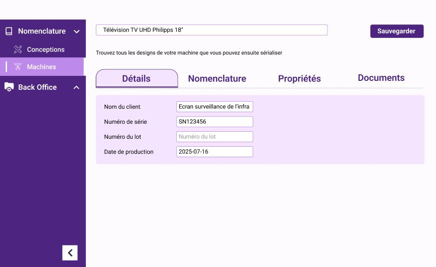
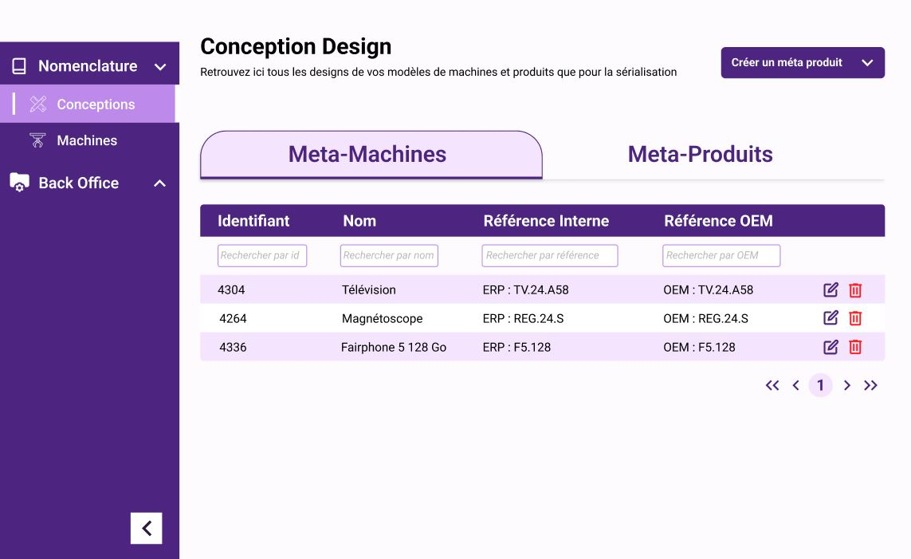
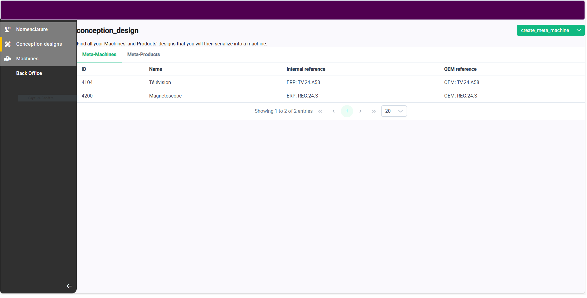
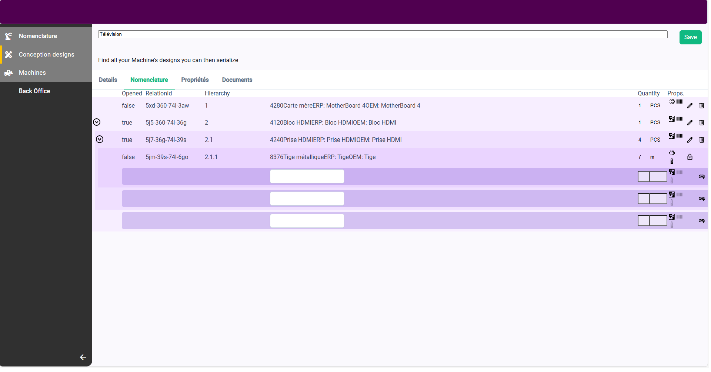
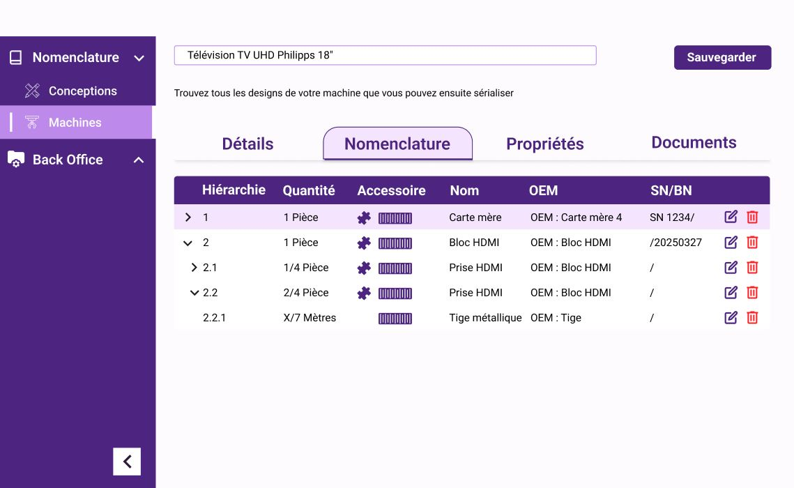

UI/UX DESIGN
Figma
Outil principal pour les maquettes haute fidélité, le design system, les composants réutilisables et le prototype interactif.
Étude de cas · UI/UX · Design System
Projet freelance mené de l’audit à la livraison d’un prototype Figma cliquable. Objectifs : clarifier la hiérarchie, harmoniser les composants, renforcer la cohérence visuelle et améliorer la lisibilité sur desktop et mobile.
Travail réalisé: analyse, benchmark, refonte visuelle, design system, composants réutilisables, documentation et prototypage haute-fidélité.
Extrait du prototype (aperçu statique)




Hiérarchie visuelle peu lisible et composants hétérogènes (boutons, onglets, tableaux) selon les pages.
Refonte de la hiérarchie visuelle (titres, tables, formulaires) et harmonisation de tous les composants UI.
Palette et contrastes irréguliers, nuisant à la lisibilité et à la cohérence de marque.
Modernisation du style : nouvelle palette, arrondis, icônes et contrastes revus.
Espaces et rythmes visuels incohérents rendant la lecture des pages plus fatigante.
Réorganisation des espaces et renforcement de la hiérarchie typographique pour une lecture plus fluide.
Responsive non uniforme selon les pages et les écrans.
Uniformisation responsive sur l’ensemble de l’interface, desktop et mobile.
La refonte a permis d’obtenir une interface plus claire, cohérente et moderne, en s’appuyant sur les principes d’UX Design et de Design System. La nouvelle palette crée une identité visuelle plus douce et structurée, tandis que la grille, les contrastes et la typographie assurent une lecture fluide et professionnelle.

Parcourez le prototype interactif Figma pour découvrir les écrans clés et les interactions.
UI/UX DESIGN
Figma
Outil principal pour les maquettes haute fidélité, le design system, les composants réutilisables et le prototype interactif.